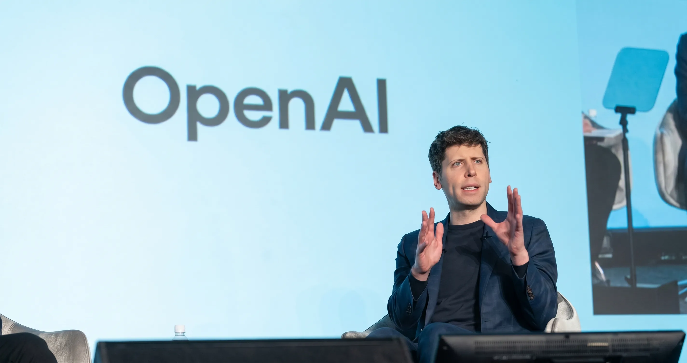

OpenAI Codex Moves Into Finance & Legal — What It Does, Which Jobs Are at Risk, and How It Competes with Anthropic in the 2026 IPO Race

OpenAI Codex started as a coding tool. It could read Python, generate functions, debug syntax errors — the kind of productivity boost that developers adopted quickly and that justified the early hype around AI for software engineering. But OpenAI's enterprise ambitions have always extended well beyond developers, and the latest expansion of Codex into finance and legal tools makes that ambition explicit. The new professional services plugins launched in June 2026 are a direct bid for the enterprise customers that Anthropic's Claude has been quietly winning in law firms and financial institutions for the past 18 months.
The stakes are material: Goldman Sachs estimated in their widely cited 2023 report that 25% of all work tasks in the finance sector and roughly two-thirds of paralegal and junior attorney tasks are susceptible to AI automation. The enterprise AI market for professional services is projected to reach $100 billion by 2028. Both OpenAI and Anthropic need large enterprise contracts to demonstrate the revenue-per-user economics that investors will expect before either company can realistically pursue the IPOs both are reportedly planning. This expansion is not just a product decision — it's a financial strategy.
Table of Contents
- What OpenAI Codex's New Finance & Legal Tools Actually Do
- Who Is Already Using AI in Finance and Law
- OpenAI vs Anthropic: How the Enterprise Battle Breaks Down
- OpenAI vs Anthropic vs Others: Enterprise AI Comparison
- Which Finance and Legal Jobs Will AI Automate First
- The IPO Race — Why Enterprise Revenue Is the Key Metric
- What Finance and Law Professionals Should Do Right Now
- Risks and Limitations of AI in Regulated Industries
- Frequently Asked Questions
What OpenAI Codex's New Finance & Legal Tools Actually Do
The new Codex professional services plugins extend the agentic AI coding agent into document-heavy workflows that are common in finance and legal — workflows where the input is unstructured text (contracts, filings, compliance documents) and the desired output is structured analysis, risk flags, or drafted responses.
Contract review and redlining is the most immediately commercially deployable tool. Codex can ingest a contract, identify non-standard clauses against a benchmark playbook, flag jurisdictional compliance issues, and generate a redlined version with suggested revisions. For law firms processing hundreds of contracts annually for M&A due diligence, this compresses a task that previously took a junior associate 4-6 hours per contract to approximately 20-30 minutes of AI processing with human review of flagged items.
Financial model generation allows finance teams to describe a modeling requirement in natural language — "build a three-statement financial model for a retail company with sensitivity analysis on gross margin and revenue growth" — and receive a functional Excel or Python model with appropriate formulas, assumptions section, and scenario switches. The output is not production-ready without expert review, but it reduces the time from requirement to first working draft from several hours to under 30 minutes.
Regulatory compliance checking scans documents against a configurable ruleset — GDPR for data-related documents, FCA rules for financial promotions, SEC disclosure requirements for public company filings — and returns a structured report of potential compliance gaps with the specific regulatory reference for each flag. This is particularly valuable for banks and asset managers operating across multiple jurisdictions where maintaining current knowledge of overlapping regulatory requirements is itself a compliance burden.
Structured data extraction from financial filings — 10-Ks, 10-Qs, annual reports, prospectuses — converts unstructured narrative disclosure into structured datasets. Analysts who previously spent hours manually extracting specific metrics from multiple quarters of filings can now define the data schema they need and process the documents automatically.
Also Read
More Technology stories →Who Is Already Using AI in Finance and Law
The deployment of AI in professional services is not theoretical — it is already materially changing workflows at major institutions, primarily through Anthropic's Claude rather than OpenAI's tools.
Harvey AI is the most significant example. Harvey, a legal AI platform built on Claude, is currently used by Allen & Overy, one of the world's largest law firms, for document review, contract analysis, and regulatory research. Shearman & Sterling, Paul Weiss, and other AmLaw 100 firms have followed. Harvey's ability to process legal documents with lower hallucination rates than GPT-4 alternatives — a critical requirement when legal advice is being drafted — has been the primary competitive differentiator that brought Anthropic's Claude to legal firms rather than OpenAI's products.
Morgan Stanley deployed OpenAI's tools for financial advisors in 2023 and expanded the deployment significantly through 2024 and 2025. Their AI assistant, built on GPT-4o, handles internal knowledge retrieval — helping advisors find relevant product information, regulatory guidance, and client communication templates quickly. This is a productivity tool rather than an autonomous AI — the advisor remains in control, the AI retrieves and surfaces information.
Goldman Sachs has invested in its own internal AI infrastructure, building on both OpenAI and internally developed models for financial analysis tasks. Their AI tools focus on coding assistance for quantitative analysts, document processing, and client communication drafting. Goldman's internal investment in AI infrastructure reflects the view that proprietary data combined with foundation models provides more competitive advantage than off-the-shelf tools.
Bloomberg launched BloombergGPT in 2023, a large language model trained specifically on financial data. Bloomberg Terminal integration of AI tools for financial analysis, news summarization, and regulatory monitoring has been rolling out progressively and is now a standard part of the Terminal offering for institutional subscribers.
Key Takeaways
- OpenAI's Codex expansion into finance and legal directly targets Anthropic's strongest enterprise territory. Harvey AI (built on Claude) is already deployed at top law firms; OpenAI's new plugins are a competitive response designed to recover lost ground in the legal market.
- The tasks most immediately affected — document review, due diligence, basic contract drafting, financial data extraction — are predominantly performed by junior professionals. Goldman Sachs research estimates 25% of finance tasks and two-thirds of paralegal tasks are susceptible to first-wave AI automation.
- Both OpenAI and Anthropic need large enterprise contracts to justify IPO valuations. Enterprise revenue — not consumer ChatGPT subscriptions — is what institutional IPO investors will evaluate. The finance and legal expansion is partly a product strategy and partly a financial narrative strategy.
OpenAI vs Anthropic: How the Enterprise Battle Breaks Down
OpenAI and Anthropic are genuinely different companies pursuing different enterprise strategies, and the differences matter for which customers each company is winning.
OpenAI's advantage is scale and familiarity. The ChatGPT brand is universally recognised. The conversion path from individual ChatGPT Plus users to ChatGPT Enterprise accounts is well-established — companies that already have employees using personal ChatGPT subscriptions have a natural upgrade pathway. OpenAI's partnership with Microsoft through the Azure OpenAI Service means enterprise customers with existing Microsoft agreements can access GPT-4o through procurement channels they already have.
Anthropic's advantage is reliability in high-stakes professional contexts. Claude's lower hallucination rates on complex document analysis tasks — demonstrated across multiple independent benchmarks — make it the preferred choice for legal firms where a hallucinated legal citation or fabricated contract clause creates professional liability. Anthropic's Constitutional AI approach and its explicit positioning around AI safety resonates with risk-averse regulated industries like banking, insurance, and law. Anthropic's Amazon investment and AWS partnership provides enterprise cloud deployment infrastructure comparable to OpenAI's Microsoft/Azure pathway.
The critical competitive question for OpenAI's Codex expansion into legal is whether it can close the reliability gap that has driven legal firms toward Claude. If Codex's legal tools produce fewer errors on legal document processing tasks than equivalent Claude tools, OpenAI's scale advantage will matter. If Claude maintains its accuracy advantage on legal-specific tasks, Harvey AI's Claude-built platform has a durable moat.
OpenAI vs Anthropic vs Others: Enterprise AI Comparison
| Feature | OpenAI (GPT-4o / Codex) | Anthropic (Claude) | Google (Gemini Enterprise) | Microsoft (Copilot) |
|---|---|---|---|---|
| Primary strength | Scale, ecosystem, breadth | Low hallucination, safety | Workspace integration | Microsoft 365 native |
| Legal AI leader | Entering via Codex | Harvey AI (dominant) | Limited legal presence | Limited |
| Finance AI leader | Morgan Stanley, Bloomberg | Growing financial use | Google Finance tools | Microsoft 365 Finance |
| Cloud infrastructure | Microsoft Azure | Amazon AWS | Google Cloud | Microsoft Azure |
| Enterprise pricing | $30+/user/month | $30+/user/month | $30/user/month | $30/user/month (M365) |
| IPO status | Targeting 2025-2026 | Pre-IPO, targeting later | Public (Alphabet) | Public (Microsoft) |
| Data privacy (enterprise) | Opt-out of training | Opt-out of training | Enterprise DPA | Enterprise DPA |
Which Finance and Legal Jobs Will AI Automate First
The honest answer to "will AI replace finance and legal jobs" is: not entire jobs, but significant portions of them, starting with the work that junior professionals currently do. The impact lands most heavily on the entry-level roles that traditionally served as the training ground for professional development in these industries — and that creates a structural challenge that goes beyond the individual job-displacement question.
In law, the first-wave automation targets due diligence document review — the process by which junior associates read through thousands of pages of contracts, board minutes, and corporate records to identify issues in an M&A transaction. Large law firms currently bill this work at junior associate rates (£300-500/hour in London, $400-600/hour in New York) for work that AI can perform in a fraction of the time. The economic pressure to adopt AI for document review is substantial, and firms that don't are already at a competitive disadvantage on deal economics.
Basic contract drafting from standard templates, first-pass regulatory research, and boilerplate compliance checking follow. These tasks represent a significant portion of first and second-year associate work — the work that law firms use to train junior lawyers in the mechanics of practice before assigning them more complex judgment-intensive tasks.
In finance, the equivalent first-wave targets are: financial data extraction and normalisation from company filings, basic financial model construction, first-pass equity research note drafting, and routine transaction documentation for standard deal types. These tasks are currently performed by analysts in their first two years, serving the same training function as due diligence work does in law.
The structural challenge is that if AI handles most of what junior lawyers and analysts currently do, the pipeline of professionals who develop the expertise to do senior work through years of junior experience becomes compressed. How firms and regulators address this pipeline problem — whether through AI-supervised junior roles, restructured training programs, or some other model — is an open question that neither AI companies nor professional services firms have fully answered.
The IPO Race — Why Enterprise Revenue Is the Key Metric
OpenAI's reported valuation of $157 billion as of late 2024 — the highest pre-IPO valuation in history at that time — was justified partly by its brand recognition and partly by its consumer revenue from ChatGPT Plus subscriptions at $20/month. Consumer subscription revenue, while significant in aggregate, does not command the revenue quality multiple that institutional IPO investors apply to enterprise software revenue.
Enterprise software revenue — contracts with defined terms, contractual renewal rates, predictable annual recurring revenue — is typically valued at 10-20x revenue by institutional investors. Consumer subscription revenue commands lower multiples because of higher churn risk. For OpenAI to justify a $157 billion+ IPO valuation, it needs to demonstrate that a substantial portion of its revenue comes from large, sticky enterprise contracts in industries like finance, legal, and healthcare.
Anthropic's situation is similar. Its $40 billion valuation is supported by Amazon's $4 billion investment and significant enterprise pipeline, but to achieve the public market valuation that would validate its research and compute investments, Anthropic needs the same enterprise revenue demonstration.
This is the specific reason why both companies are competing intensively for finance and legal customers in 2026. A disclosed enterprise contract with a major bank or law firm — a Goldman Sachs, a JPMorgan, an Allen & Overy — serves as a public reference customer that validates the enterprise revenue narrative ahead of IPO. The competition between OpenAI and Anthropic for these logos is partly about the revenue and partly about the IPO story they enable.
What Finance and Law Professionals Should Do Right Now
The professionals who will thrive in an AI-augmented finance and legal environment share a specific characteristic: they treat AI tools as productivity multipliers rather than threats, and they invest in developing the judgment and expertise that AI cannot replicate rather than competing with AI on the tasks it does well.
Use the tools, now. The professional who arrives at a job interview in 2027 having never used ChatGPT Enterprise, Claude, Harvey AI, or Bloomberg Terminal AI tools is at a disadvantage compared to someone who has integrated these tools into their work regularly. AI literacy in professional services is no longer a differentiating skill — it's becoming a baseline expectation.
Develop verification expertise. The most valuable AI-adjacent skill in legal and finance is knowing when AI output is wrong. AI tools produce plausible-sounding errors at a low but non-zero rate. Professionals who can quickly identify errors in AI-generated contract analysis, financial models, or regulatory assessments — because they have the domain knowledge to recognise when something doesn't add up — are more valuable, not less valuable, as AI adoption increases.
Focus on judgment-intensive work. Complex negotiation, client relationship management, strategic M&A advisory, trial strategy, investment thesis development — these are tasks where human judgment, contextual understanding, and interpersonal skills are central to the outcome. AI can support these tasks with research and document processing, but the judgment layer remains human for the foreseeable future. Professionals who develop genuine expertise in these areas are building a durable advantage.
Understand AI's limitations in your specific regulatory context. Finance and legal are heavily regulated industries. AI output cannot be treated as legal or financial advice without professional supervision. Understanding the regulatory boundaries of AI deployment in your specific practice area — what AI can assist with and what requires direct professional judgment — is increasingly a compliance competency, not just a technical one.
Risks and Limitations of AI in Regulated Industries
The adoption of AI tools in finance and legal is not without meaningful risk, and the limitations of current AI systems are particularly consequential in contexts where professional liability attaches to errors.
Hallucination remains the primary reliability concern. AI language models generate confident-sounding text regardless of accuracy — they do not have a built-in uncertainty signal that reliably indicates when their output is factually incorrect. In legal contexts, a hallucinated case citation, a fabricated regulatory provision, or a mischaracterised contract term creates direct professional liability for the lawyer who includes it in advice. In finance, a fabricated data point in a financial model or an inaccurate regulatory disclosure creates both regulatory and fiduciary liability.
Data confidentiality is a significant concern for both industries. Legal advice and financial information are among the most sensitive categories of professional data. Enterprise versions of both OpenAI and Anthropic's products offer contract terms that exclude user data from model training, but enterprise clients in regulated industries must still conduct data residency and sovereignty analysis before routing client matter data through third-party AI systems. Some jurisdictions — particularly in the EU under GDPR — create specific constraints on where legal and financial data can be processed.
Regulatory lag is another practical challenge. Neither the FCA, the SEC, nor the SRA has published comprehensive guidance on the use of AI in financial advice or legal practice. Professionals operating in the absence of clear regulatory guidance are making judgment calls about appropriate AI use that may or may not survive future regulatory scrutiny. The firms that are documenting their AI governance frameworks most carefully now are best positioned when that guidance arrives.
Frequently Asked Questions
What new tools did OpenAI announce for Codex in finance and legal?
OpenAI's Codex professional services expansion includes: automated contract review and redlining against customisable playbooks, due diligence document processing at scale, financial model generation from natural language requirements, regulatory compliance checking across multiple jurisdictions, and structured data extraction from financial filings and legal documents. These tools are available through ChatGPT Enterprise and the OpenAI API.
How is OpenAI competing with Anthropic for business customers?
OpenAI's competitive position relies on scale, brand recognition, and the Microsoft/Azure distribution channel. Anthropic competes on accuracy and reliability — Claude's lower hallucination rates on complex legal and financial document processing have made it the preferred foundation for legal AI platforms like Harvey AI. OpenAI's Codex expansion into professional services is partly a competitive response to Anthropic's strong enterprise foothold in law firms.
Which finance and legal jobs will AI automate first?
First-wave automation targets junior professional work: due diligence document review, basic contract drafting from templates, first-pass regulatory research, financial data extraction and normalisation, and routine financial model construction. These tasks represent a significant portion of first and second-year work for associates and analysts. Complex judgment tasks — client advisory, litigation strategy, investment thesis development — remain human-intensive.
What should finance and law students do to prepare for AI?
Use AI tools actively now — Harvey AI, ChatGPT Enterprise, Claude, Bloomberg Terminal AI. Develop AI output verification skills — the ability to identify when AI gets it wrong is more valuable than prompt writing. Focus on judgment-intensive skills that AI cannot replicate: client relationships, complex negotiation, strategic advisory. And understand the regulatory limits of AI use in your specific practice jurisdiction.
When will OpenAI and Anthropic go public?
OpenAI has been targeting a 2025-2026 IPO with a reported valuation of $157 billion as of late 2024. Anthropic raised at a $40 billion valuation in 2025 and is generally considered further from public market readiness. Neither has confirmed a date. The enterprise revenue race is partly driven by the need to demonstrate sustainable business revenue — not just consumer subscriptions — before institutional investors will support the IPO valuations both companies are targeting.
Conclusion
OpenAI's Codex expansion into finance and legal is a significant strategic move, but it's happening in a market where Anthropic has already established meaningful position through Harvey AI and direct enterprise relationships with major law firms. The technical competition between the two companies in professional services ultimately comes down to one question: which AI produces fewer consequential errors in legal and financial document analysis? Because in industries where professional liability attaches to errors, accuracy is not a nice-to-have — it is the product.
For finance and legal professionals, the practical message is not that AI is coming to take their jobs. It's that AI is already here, changing what routine looks like in their professions, and the professionals who adapt earliest — who develop AI literacy, verification skills, and focus on the judgment-intensive work that remains human — will be more productive and more valuable than those who don't. The professionals who will struggle are those whose entire workflow consists of the tasks that AI does well: document reading, pattern recognition, template application. That's not most of a senior professional's work, but it's a lot of what junior professionals do. The entry level of these professions is changing, and understanding that change clearly is the starting point for navigating it.

Marcus J. Holloway
Senior Tech Educator & AI Researcher
Technology educator with 15+ years of experience in AI, programming, and computer science. Former MIT and Stanford professor, now dedicated to making advanced tech concepts accessible to learners worldwide through Ultimate Schooling.
💬 Questions or Comments?
Have a question or want to share your thoughts? Leave a comment below!